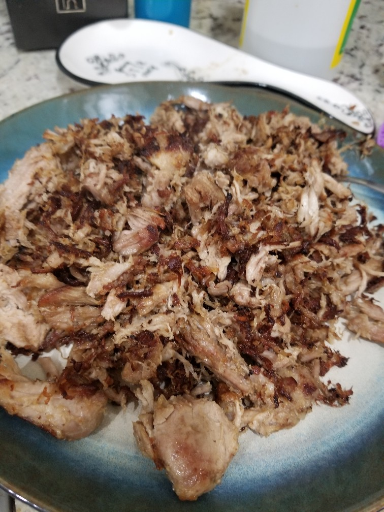
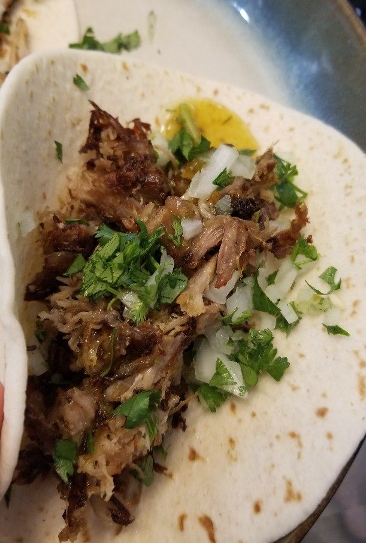

4 pounds boneless pork shoulder, cut into 2-inch-thick slabs
1 medium onion, roughly chopped
6 medium cloves garlic
1 stick cinnamon, broken into 3 to 4 pieces
2 bay leaves
1 medium orange, peel intact
Directions
Combine ingredients in bowl. Juice orange and include left over rind. Season with salt and place in bag to vacuum seal.
Cook in water bath according to table below.
Remove meat from bag, and once cool enough to handle, shred.
For BroilerSpread meat on baking sheet and broil on high flipping pieces occasionally until meat is browned and crisp ~10 minutes total./nFor Stove-topCook in cast iron pan until meat is browned and crisp.
145° for 24 to 36 hours
Very tender and moist; not very shreddable.
165° for 12 to 24 hours
Moist and easy to shred with your hands or forks
185° for 8 to 16 hours
Traditional texture the shreds naturally
Notes
2020-06-30 - Cooked 2.2 lbs with same amounts other ingredietns at 185 for around 7.5 hour. Fried shredded pork in lard in cast iron to finish. Flavor pretty plain, "pork" flavor is at the front. Seemed like it needed more fat flavor which is why the added lard to the pan. Sous vide texture was nice, and crisped up nicely as well. Might consider adding other flavor / aromatics when making again.

